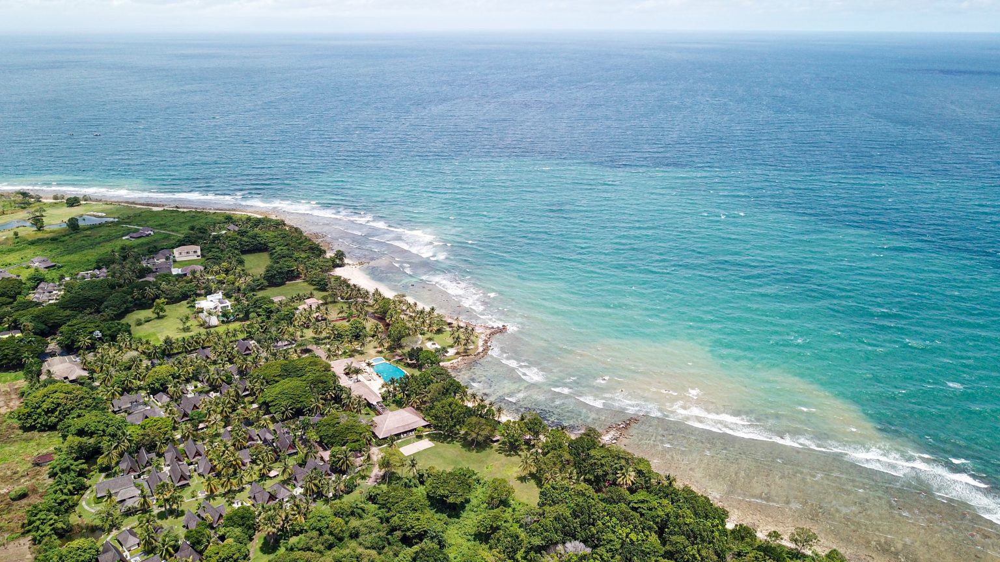
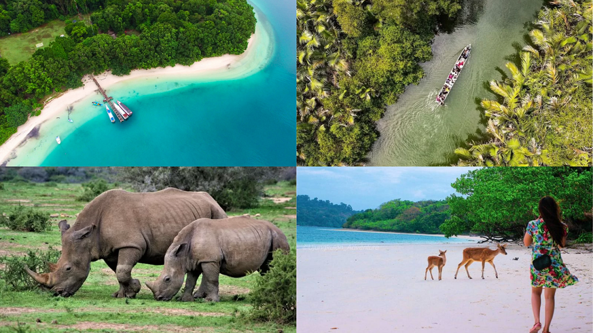
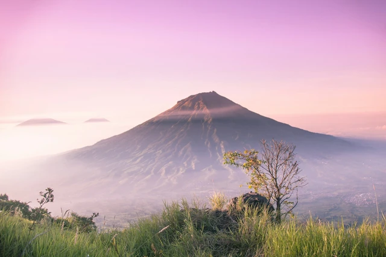

Wisata
Kabupaten Pandeglang merupakan surga wisata alam di Banten yang menyajikan lanskap lengkap: dari hutan tropis lebat, jalur pendakian gunung, air terjun tersembunyi, hingga perairan jernih di ujung barat Pulau Jawa. Suasananya yang masih alami dan jauh dari polusi perkotaan menjadikannya destinasi favorit bagi pencinta petualangan dan ketenangan.
Pantai Tanjung Lesung

Pantai Tanjung Lesung adalah salah satu destinasi wisata bahari unggulan di ujung barat Pulau Jawa, tepatnya di Kabupaten Pandeglang, Banten. Pantai ini terkenal dengan garis pantainya yang membentang luas, hamparan pasir putih bersih, serta air laut jernih bergradasi biru kehijauan yang relatif tenang karena berada di teluk terlindung.
Selain menyuguhkan panorama langsung ke arah siluet Gunung Anak Krakatau dan matahari terbenam yang memukau, kawasan Kawasan Ekonomi Khusus (KEK) ini juga menjadi pusat berbagai aktivitas seru—mulai dari snorkeling, menyelam, bermain kano, hingga menikmati berbagai wahana water sports. Suasananya yang asri dan berpadu dengan deretan pohon kelapa menjadikannya tempat ideal untuk rehat dari hiruk-pikuk kota.
Ujung Kulon

Taman Nasional Ujung Kulon adalah kawasan konservasi alam liar yang terletak di semenanjung paling barat Pulau Jawa, Kabupaten Pandeglang, Banten. Ditetapkan sebagai Situs Warisan Dunia UNESCO sejak 1991, kawasan ini merupakan benteng pertahanan terakhir bagi hutan hujan tropis dataran rendah di Pulau Jawa sekaligus habitat alami utama bagi satwa langka badak jawa (Rhinoceros sondaicus) bercula satu. Selain hutan lebat yang kaya flora dan fauna endemik, Ujung Kulon mencakup kepulauan eksotis seperti Pulau Peucang, Pulau Handeuleum, dan Pulau Panaitan. Kawasan ini menyuguhkan panorama bahari berpasir putih, terumbu karang yang alami, jalur susur sungai Cigenter layaknya hutan Amazon kecil, serta menjadi destinasi utama untuk petualangan alam liar, susur hutan, dan ekowisata.
Gunung Karang

Gunung Karang (1.778 mdpl) adalah gunung tertinggi di Provinsi Banten yang terletak di Kabupaten Pandeglang. Gunung berapi istirahat ini terkenal sebagai destinasi pendakian favorit dengan udara sejuk, panorama alam terbuka dari puncaknya, serta memiliki nilai spiritual dan sejarah melalui situs ziarah Sumur Tujuh.